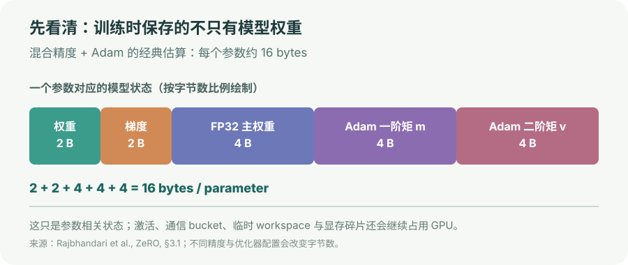
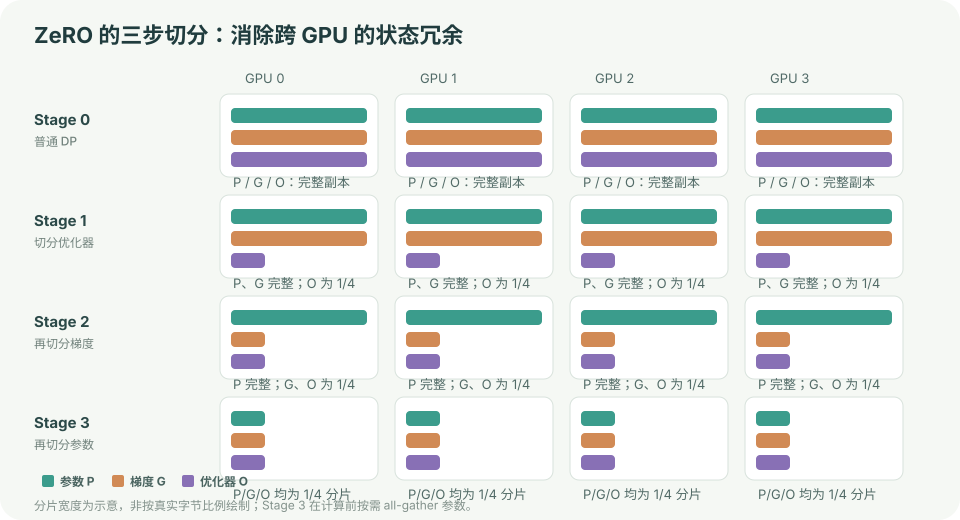
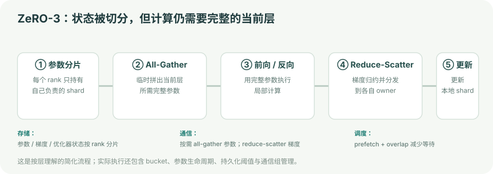
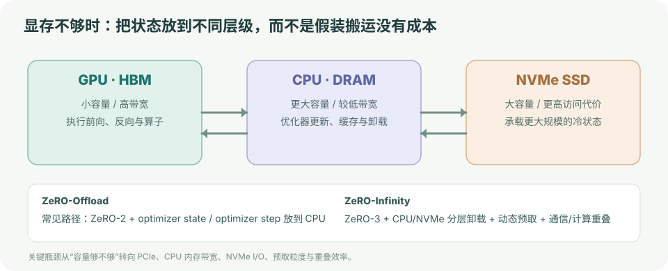
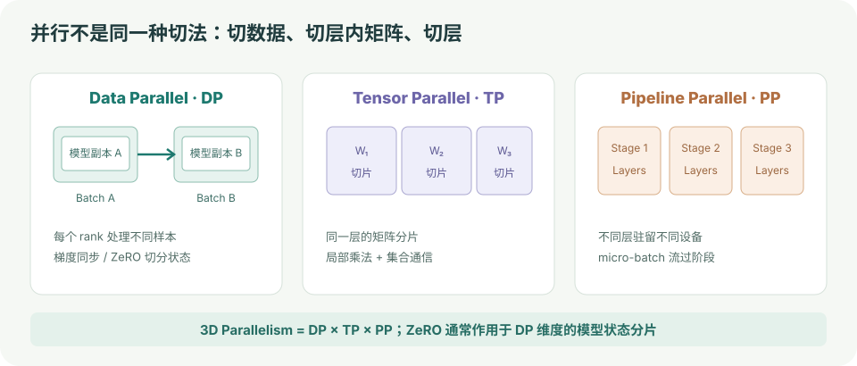
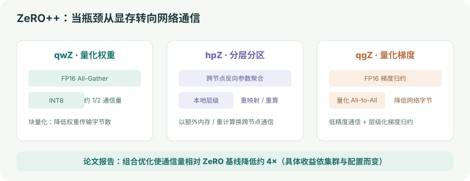

Understanding DeepSpeed
为什么一张 GPU 装得下模型权重，却装不下训练过程？从 ZeRO 的状态切分出发，理解大模型训练如何把显存、通信、CPU 内存与多 GPU 并行组织成一个系统。
01 ·一个反直觉的问题：模型只有 15 GB，为什么训练需要 120 GB？
假设一个模型有 7.5 billion（75 亿）个参数。若每个参数用 FP16 存储，权重只占约 15 GB。但使用混合精度 Adam 训练时，仅仅与参数直接相关的状态就可能需要约 120 GB——还没有算激活、临时缓冲和显存碎片。
这是理解 DeepSpeed 的起点。推理时，我们通常先想到「把权重放进显存」；训练时，GPU 还必须保存反向传播所需的梯度、优化器状态，以及某些实现中的 FP32 主权重。模型的参数规模并不等于训练时的显存规模。
DeepSpeed 是一个面向 PyTorch 的深度学习优化库，核心目标不是提出一种新的 Transformer，而是让训练系统更有效地使用计算、内存、通信和 I/O。它最有代表性的技术是 ZeRO（Zero Redundancy Optimizer）：把原本在多个数据并行进程中重复保存的模型状态切分开，按需重建。
02 ·先看基线：普通数据并行为什么会浪费显存？
数据并行（Data Parallelism, DP）的想法很直接：把一个 batch 切成几份，每张 GPU 拿到不同样本，但每张 GPU 都保存一份完整模型副本。每个 rank 独立执行前向与反向传播，再通过梯度同步让所有副本更新到一致的参数。
- 复制模型：GPU 0、GPU 1、GPU 2、GPU 3 都有相同的参数、梯度和优化器状态。
- 切分数据：每张 GPU 处理不同 mini-batch，增加并行计算吞吐。
- 同步梯度：通过 All-Reduce 聚合各 rank 的梯度，使每个副本获得一致的更新方向。
- 重复更新：各 rank 使用相同优化器状态更新完整模型副本。
DP 的计算利用率和编程便利性都很好，但它有一个显存问题：如果有 64 张 GPU，每张 GPU 仍然保存完整的参数、梯度和 Adam 状态。增加 GPU 可以增加算力，却不会自动把每张 GPU 上的模型状态缩小。
把样本分给不同设备，保持每张卡执行相同模型图，通常容易集成，计算粒度也较大。
每个 rank 保存相同的参数、梯度和优化器状态。状态副本越多，冗余越明显。
因此 DeepSpeed 的关键切入点不是「把 batch 再切小」，而是问：这些状态真的需要在每张 GPU 上都完整保存吗？
03 ·把显存拆成账本：16 bytes / parameter 从哪里来？
以论文分析的混合精度 Adam 为例。前向和反向计算可以使用 FP16 权重与激活；为了稳定地更新参数，优化器还保留 FP32 主权重，以及 Adam 的一阶、二阶动量。

令 Ψ 表示参数总数。按每个参数的字节数相加：
对 7.5B 参数，模型状态估算为 7.5 × 10⁹ × 16 = 120 × 10⁹ bytes，即 120 GB（十进制）。注意，这不是训练峰值显存的完整公式。激活取决于 batch size、序列长度、层数和隐藏维度；临时通信缓冲区、内存碎片和 CUDA workspace 也会继续占用显存。
ZeRO 的第一层目标是消除模型状态的跨 rank 冗余。它并不承诺把训练显存中的每一项都除以 GPU 数量。
04 ·ZeRO 的核心：从 Stage 1 到 Stage 3，逐步切分三类状态
ZeRO 的名字来自 Zero Redundancy Optimizer。这里的「Zero」不是显存归零，而是逐步消除数据并行中重复保存的状态。设数据并行组大小为 N，并先忽略激活与临时缓冲。

| 方案 | 每个 rank 保留什么 | 模型状态显存 / rank | 直觉 |
|---|---|---|---|
| Stage 0 · 普通 DP | 完整参数、梯度、优化器状态 | 16Ψ | 每张卡都复制所有状态 |
| Stage 1 | 完整参数、完整梯度；优化器状态分片 | 4Ψ + 12Ψ/N | 先切最占空间的 Adam 状态 |
| Stage 2 | 完整参数；梯度与优化器状态分片 | 2Ψ + 14Ψ/N | 梯度也只留自己负责的部分 |
| Stage 3 | 参数、梯度、优化器状态全部分片 | 16Ψ/N | 完整参数只在计算时按需重建 |
Stage 1：先切优化器状态（Optimizer State Partitioning）
Adam 的 FP32 主权重与一阶、二阶矩合计占 12Ψ bytes。Stage 1 把这些状态切成 N 份，每个 rank 只负责更新自己的那一份。参数和梯度仍然在每张卡上完整保存，因此每卡模型状态显存为：
为什么前面仍有 4Ψ？因为每个 rank 仍保存 2Ψ 的 FP16 参数和 2Ψ 的 FP16 梯度。被切分的只是剩余 12Ψ 优化器状态。N 足够大时，12Ψ/N 变小，内存趋近 4Ψ，相对 16Ψ 的基线约减少到四分之一。
Stage 2：再切梯度（Gradient Partitioning）
每个 rank 只更新自己负责的参数分片，所以它不需要长期保留所有参数的完整梯度。反向传播时，梯度通过 Reduce-Scatter 聚合并分发到对应 owner；某个分片完成归约后，其他 rank 不再保留这部分完整梯度。
这时完整参数仍在每张卡上，因此固定部分只剩 2Ψ。当 N 增大时，模型状态显存趋近基线的八分之一。公式对应 ZeRO 原论文 §5.2。
Stage 3：参数也切分（Parameter Partitioning）
Stage 3 将参数本身也分片，每张 GPU 只保存自己负责的参数片段。可是在前向和反向计算某一层时，该层通常需要完整权重。因此 DeepSpeed 会在计算前通过 All-Gather 临时收集所需参数，在不再需要时释放或重新分片。
这就是 ZeRO 最重要的思想：参数在存储时是分片的，在计算时按需聚合。它用动态通信调度换取更低的常驻显存。对应原论文 §5.3 参数分片。
16Ψ/N 是模型状态的理想化分摊，不是任意时刻 GPU 峰值显存的保证。前向时临时聚合的参数、激活、通信 bucket、预取缓冲等都会让实际峰值高于该值。05 ·Stage 3 的动态生命周期：参数什么时候被拼回来？
可以把 ZeRO-3 想成「分布式保存、局部使用、用完释放」。假设当前层的权重被切成四片，分别由四个 rank 保存。执行当前层前，所有 rank 通过 All-Gather 收集这四片，得到该层完整参数；计算完成后，不必让完整参数永久驻留在每张 GPU。

更具体地看，一层 Transformer 的计算大致经历：
- 参数预取（prefetch）：在当前层真正执行前，提前把需要的参数片段传输到本地，尽量隐藏通信等待。
- 参数聚合（all-gather）：把不同 rank 保存的 shard 合并为当前层可用的完整权重。
- 前向 / 反向：执行矩阵乘法、Attention、MLP 等算子，产生该层梯度。
- 梯度分发（reduce-scatter）：先归约不同数据分片的梯度，再把归约结果分发给负责对应参数的 rank。
- 本地优化器更新：每个 rank 只更新自己持有的参数与优化器状态 shard。
真实运行时还有 bucket 大小、参数持久化阈值、最大 live parameters、prefetch bucket 和通信重叠等调度参数。bucket 太小，通信调用次数增加；bucket 太大，临时缓冲占用可能上升。预取太激进，也可能让尚未使用的参数提前占据显存。
06 ·显存省下来了，通信会不会反而拖慢训练？
这是 ZeRO 设计中必须回答的问题。分片并不是免费的：参数与梯度在不同 GPU 之间移动，需要集合通信（collective communication）。但不同 Stage 的通信代价并不相同。
| 策略 | 关键通信 | 原论文的通信分析 | 主要代价 |
|---|---|---|---|
| 普通 DP | 梯度 All-Reduce | 基线 | 梯度同步；每卡保存完整状态 |
| ZeRO Stage 1 | 优化器状态分片后同步更新参数 | 与 DP 接近相同的通信量 | 状态分片管理与更新后参数同步 |
| ZeRO Stage 2 | 梯度 Reduce-Scatter | 与 DP 接近相同的通信量 | 梯度归约并按分片归属分发 |
| ZeRO Stage 3 | 参数 All-Gather + 梯度 Reduce-Scatter | 原论文 §5.3 / §7分析约为 DP 基线通信量的 1.5× | 前向 / 反向按需聚合参数 |
这里的 1.5× 是 ZeRO 原论文在其通信模型下给出的分析结果，不应当视为所有模型、网络拓扑、bucket 设置和 DeepSpeed 版本的固定倍率。跨节点网络带宽、每 GPU batch size、参数复用距离以及通信与计算是否能重叠，都会改变实际表现。
为什么 overlap communication 很重要？
假设一层计算需要 10 ms，通信需要 4 ms。如果二者严格串行，总耗时近似 14 ms；如果调度得当，通信中的一部分可以与计算并行，耗时更接近 10 ms，而不是简单相加。
这是帮助理解调度收益的简化模型，不是某个 DeepSpeed 版本的性能预测公式。真实耗时还受到同步点、通信拥塞、算子效率和负载不均影响。
所以，评估 ZeRO 不能只问「显存降了几倍」，还要测每步训练时间、GPU 利用率、网络利用率、通信等待比例，以及模型质量是否保持一致。
07 ·ZeRO 没有消灭所有显存：激活、临时缓冲和碎片
原始 ZeRO 论文把显存问题分成两大类：模型状态（model states）和剩余状态（residual states）。前者是参数、梯度、优化器状态；后者包括激活、临时缓冲和内存碎片。
前向传播产生、反向传播还要使用的中间张量。它会随 batch、sequence length、hidden size 和层数增长。
梯度归约、All-Gather、融合算子和通信 bucket 所需的临时工作区。
空闲显存总量足够，但没有足够大的连续块，导致分配失败或 allocator 开销变高。
只保存部分激活，反向时重新计算未保存部分，用额外计算换更低的激活常驻显存。
ZeRO 论文 §6中的 ZeRO-R 进一步讨论激活检查点分片、固定大小缓冲区和显存碎片管理。它与 ZeRO-DP 的参数状态分片互补：如果瓶颈来自长序列激活，仅仅把 Adam 状态切成 N 份，并不能自动解决问题。
实践中要先通过 profiler 判断显存究竟花在哪里：参数状态占主导时优先考虑 ZeRO；激活占主导时要同时考虑 gradient checkpointing、micro-batch、序列并行、FlashAttention 或更合适的 attention kernel。
08 ·GPU 仍然装不下？ZeRO-Offload 与 ZeRO-Infinity 把内存层级扩展到 CPU / NVMe
GPU HBM 很快，但容量有限；CPU DRAM 容量通常更大；NVMe SSD 的容量更大，却有更高延迟和更低的访问带宽。DeepSpeed 的异构内存路线，是把不同状态放到合适的层级，并通过分块传输、预取和重叠执行，尽量不让 GPU 长时间等待数据。

ZeRO-Offload：把优化器工作迁移到 CPU
ZeRO-Offload 原论文的典型设计是在 ZeRO Stage 1/2 的基础上，将优化器状态与优化器更新计算放到 CPU 内存 / CPU 侧执行，GPU 主要负责模型计算。它的目标是减少 GPU 上的优化器状态与更新工作，同时尽量减少 GPU–CPU 之间的数据移动。论文提出 DeepSpeedCPUAdam 等 CPU 优化器实现来降低 CPU 更新的开销。
这并不是「把所有模型数据都搬到 CPU」。数据移动本身很昂贵，若每一步都在 GPU 与 CPU 之间搬运大量张量，PCIe 就可能成为新的瓶颈。
ZeRO-Infinity：在 ZeRO-3 上管理更大的异构状态池
ZeRO-Infinity 原论文将参数、梯度和优化器状态的卸载扩展到 CPU 与 NVMe，并使用更细致的带宽中心分区、动态预取和重叠调度。其关键不只是「把东西放到 SSD」，而是把数据传输分成 NVMe→CPU、CPU→GPU、GPU 间聚合等路径，并尽量让这些传输与计算并行。
如果传输只能串行发生，增加一层 NVMe 反而会叠加等待时间。要让 offload 有效，系统必须同时考虑 PCIe 通道、NUMA、CPU 内存带宽、NVMe 读写吞吐、分块粒度、预取距离和激活存储。
09 ·ZeRO 与 3D Parallelism：它们不是二选一的同义词
当模型继续变大，单纯的数据并行状态切分未必够用。训练系统还可以沿三个不同维度拆分工作：数据并行、张量并行、流水线并行。DeepSpeed 的大模型训练路线通常将 ZeRO 与这些并行方式组合，而不是把它们混为一谈。

- Data Parallelism（DP）：每个副本处理不同数据。ZeRO 在这一维度上切分参数、梯度和优化器状态，减少 DP rank 之间的状态冗余。
- Tensor Parallelism（TP）：把单个大矩阵乘法或 Transformer 层内部的张量切片到多张 GPU 上，每张卡只计算部分结果，再通过集合通信合并。
- Pipeline Parallelism（PP）：把不同层放到不同设备阶段，通过 micro-batch 让多个阶段尽量同时工作；需要处理 pipeline bubble 和阶段负载不均。
如果 DP、TP、PP 组大小分别是 D、T、P，那么总设备数可近似看作 D × T × P（还可能包含 sequence parallel 等其他维度）。特别注意：ZeRO 公式中的 N 是对应的数据并行分片组大小，不应在混合并行时直接拿全局 GPU 总数代替。
DeepSpeed 官方大模型训练指南把 ZeRO 路线和 3D Parallelism 路线作为两种主要组织方式，并指出选择取决于模型结构、每 GPU batch、互联带宽等因素。ZeRO 对既有 DP 代码通常更容易接入；TP / PP 则可能要求模型模块或执行流程适配。
10 ·ZeRO++：当网络成为瓶颈，进一步压缩通信字节数
ZeRO-3 通过参数 All-Gather 换取较低的常驻显存，但大规模训练时，参数与梯度通信可能变成主要瓶颈。尤其当跨节点网络带宽有限，或每张 GPU 的 batch 很小时，通信开销难以被计算完全覆盖。

对权重 All-Gather 使用分块量化，把 FP16 通信压到 INT8，降低参数聚合通信量。
利用节点内 / 节点间带宽层次，通过数据重映射与重计算减少跨节点反向参数 All-Gather。
以量化梯度与 All-to-All 归约策略降低梯度通信量，并利用节点内先归约的层次结构。
量化、反量化、通信与计算重叠，以及融合 kernel 必须共同工作，理论字节减少才可能转化成端到端吞吐提升。
ZeRO++ 论文摘要报告，组合优化相对 ZeRO 基线可减少约 4× 通信量，并在 384 GPU 规模的实验中实现最高约 2.16× 吞吐提升。这里的「最高」依赖论文中的模型、batch 和集群配置，不能直接当作任意训练任务的加速承诺。
11 ·DeepSpeed 不只有 ZeRO：训练系统工具箱正在扩展
把 DeepSpeed 等同于 ZeRO 会漏掉它的系统定位。官方文档还覆盖自动张量并行、长序列训练、MoE、数据效率、profiling、通信日志、checkpointing 和 kernel 优化等能力。
通过配置把支持的层切分到多个 GPU，训练时可与 ZeRO 组合，减少手工编写张量切片代码的负担。
沿 sequence 维切分输入，再通过 All-to-All 在 attention head 维交换 Q/K/V，使不同 rank 计算不同 attention heads，服务长上下文训练。
把不同专家分配到不同设备，配合 token routing 与通信组织稀疏专家计算。
帮助定位算力、通信与数据瓶颈，并管理训练状态保存、恢复和数据利用效率。
截至本文检索时，DeepSpeed 官方 Releases 页面将 v0.20.0 标为 Latest；稳定文档也列出 Automatic Sequence Parallel Training（AutoSP）等较新的接口。具体 API、兼容矩阵和配置字段会随版本变化，工程项目应锁定 DeepSpeed、PyTorch、CUDA、NCCL 与模型代码的版本组合。
这些能力的核心不是「越多并行维度越好」，而是根据瓶颈选择拆分方向：参数状态放不下，先看 ZeRO；单层矩阵本身太大，考虑 TP；模型层数和执行流水适合分段，考虑 PP；序列长度导致 attention 激活和通信压力，考虑 sequence parallel。
12 ·训练与推理要分开：ZeRO 的显存账本不是 KV Cache
训练和推理都需要 GPU，但它们的内存瓶颈并不相同。训练要保存梯度与优化器状态；自回归推理通常不需要这些状态，却会为历史 token 的 Key / Value 保存 KV Cache，并受到 batch、上下文长度和请求调度影响。
| 维度 | 训练（Training） | 推理 / Serving（Inference） |
|---|---|---|
| 核心状态 | 权重、梯度、优化器状态、激活 | 权重、KV Cache、临时激活 / 工作区 |
| 常见瓶颈 | 模型状态显存、激活、梯度同步、跨节点通信 | KV Cache、prefill/decode、batch 调度、内存带宽 |
| 典型技术 | ZeRO、TP、PP、sequence parallel、checkpointing | KV Cache 管理、连续批处理、kernel fusion、量化与 serving scheduler |
| 评估指标 | step time、tokens/s、MFU、收敛与训练成本 | TTFT、TPOT、吞吐、尾延迟、并发容量 |
DeepSpeed 也有推理相关技术，但官方旧版 DeepSpeed-Inference 文档已明确提示：其 v2 演进为 DeepSpeed-FastGen，需要关注 FastGen 的最新模型支持和 serving 特性。ZeRO-3 可以帮助分片加载大模型，但 Stage 2 的梯度分片本身没有推理用途；更不能把 ZeRO 的参数状态公式当作 KV Cache 显存公式。
13 ·动手估算：换模型规模、GPU 数量与 ZeRO Stage
下面的计算器使用原始 ZeRO 论文的混合精度 Adam 模型状态假设，帮助你理解 Stage 和 DP degree 对每个 rank 的模型状态显存有什么影响。默认选用 7.5B 参数、64 路 DP、Stage 3。
一个最小可运行的数学模型
仓库中附带了 zero_memory.py。它用标准库实现模型状态估算，并用 Python 列表模拟 Reduce-Scatter 与 All-Gather 的数据含义。它不是 DeepSpeed 的分布式运行时，也没有调用 NCCL 或启动 GPU。
from posts.training.deepspeed.zero_memory import (
model_state_gb, reduce_scatter_sum, all_gather
)
# 7.5B parameters, 64-way data parallel group
for stage in range(4):
print(stage, model_state_gb(7_500_000_000, 64, stage))
# Each rank contributes a gradient vector.
grads = [
[1.0, 2.0, 3.0, 4.0],
[10.0, 20.0, 30.0, 40.0],
[100.0, 200.0, 300.0, 400.0],
[1000.0, 2000.0, 3000.0, 4000.0],
]
shards = reduce_scatter_sum(grads)
assert shards == [[1111.0], [2222.0], [3333.0], [4444.0]]
assert all_gather(shards) == [1111.0, 2222.0, 3333.0, 4444.0]执行方式：python posts/training/deepspeed/zero_memory.py；测试方式：python -m pytest -q tests/test_deepspeed_memory.py。数值测试检查了 7.5B / 64 GPU 的论文算例、Stage 递进、DP degree 变化，以及 toy collective 的求和与重建。
DeepSpeed 配置从哪里开始？
一个典型的训练配置会把 ZeRO stage 写在 JSON 中，再由 deepspeed.initialize 初始化 Engine。下面只展示配置形状；实际 bucket 大小、offload、混合精度和 batch 参数应根据模型与硬件调优。
{
"train_micro_batch_size_per_gpu": 1,
"gradient_accumulation_steps": 8,
"bf16": {
"enabled": true
},
"zero_optimization": {
"stage": 2,
"contiguous_gradients": true,
"overlap_comm": true,
"reduce_scatter": true,
"reduce_bucket_size": 500000000,
"allgather_bucket_size": 500000000
}
}这里的 Stage 2 适合说明「参数完整保留、梯度与优化器状态切分」的路径。若参数本身已无法在单卡驻留，可进一步评估 Stage 3；若显存压力主要来自 Adam 状态，也可以先测 Stage 1 / 2，避免一开始就承担 Stage 3 的参数聚合通信。
注意：上面的配置是教学起点，不是对所有 DeepSpeed 版本都保证可直接运行的完整训练脚本。真正启动训练前，还需要模型、数据集、优化器、launcher、分布式环境、CUDA/NCCL 兼容性和 checkpoint 方案。
14 ·论文证据：哪些数字来自原论文，哪些只是估算？
DeepSpeed 是持续演进的软件系统，不能把不同论文、不同 GPU、不同模型和不同集群的最佳结果拼成一个统一的性能承诺。下面只保留能够明确定位到论文摘要或章节的结果。
| 工作 | 论文报告 | 正确的解读方式 |
|---|---|---|
| ZeRO（SC20） | 在 400 张 NVIDIA V100 上训练 100B 级模型，报告总吞吐 15 PFLOPs；论文还展示 64 路 DP 下 7.5B 模型的状态显存估算。 | 历史论文硬件与实验配置，不是当前 GPU 的 benchmark。 |
| ZeRO-Offload（ATC 2021） | 论文报告单张 V100 上训练 10B 模型约 40 TFLOPs/GPU，并比较了 PyTorch 基线。 | 特定模型、硬件、batch 和实现条件下的系统实验。 |
| ZeRO-Infinity（SC21） | 论文报告在 512 张 V100 上超过 25 PFLOPs，并报告约 40% 峰值利用率。 | 说明异构内存与带宽聚合设计的可行性，不代表 NVMe offload 对任何任务都更快。 |
| ZeRO++（2023） | 摘要报告通信量降低约 4×，并在 384 GPU 规模实验中实现最高约 2.16× 吞吐提升。 | 针对通信瓶颈的实验结果；收益依赖网络带宽、模型和 batch。 |
可以从这些工作看到系统演进的逻辑：ZeRO 先减少状态冗余；Offload / Infinity 扩展可用内存层级；ZeRO++ 进一步优化通信字节；后续 TP、sequence parallel 与自动并行则面向不同的计算和序列长度瓶颈。
本文中的 7.5B / 64 GPU 数值是根据论文的 16Ψ 模型状态公式计算并与论文 Table 1 对照；计算器和 Python 测试只验证该模型，不构成一次真实的 DeepSpeed 训练 benchmark。
15 ·什么时候该用 DeepSpeed？以及它解决不了什么？
按瓶颈选技术，而不是按 Stage 数字选技术
- 模型能放下，Adam 状态占主导：从 Stage 1 或 Stage 2 开始测量，比较显存节省与额外同步成本。
- 每卡连完整参数都放不下：评估 Stage 3；若单层张量本身太大，再考虑 TP 或其他模型并行。
- GPU 显存不足，但 CPU 内存充足：评估 ZeRO-Offload，并测量 PCIe、CPU 内存带宽和 CPU optimizer 的吞吐。
- 模型极大，CPU / NVMe 资源与 I/O 足够：评估 ZeRO-Infinity；必须测试预取、分块和通信重叠是否真正隐藏了数据搬运。
- 跨节点网络成为瓶颈：检查拓扑、通信日志和 batch；再评估 ZeRO++、分层通信或调整并行组。
- 长序列激活成为瓶颈：优先测 activation checkpointing、FlashAttention、sequence parallel 与 micro-batch，而不是期待 ZeRO-3 独自解决。
几个不能忽略的边界
- 通信不是免费的：Stage 3 用参数 All-Gather 换取常驻显存下降，网络慢时可能受通信限制。
- 激活仍然存在：参数分片不会自动消除前向保存的激活张量。
- Offload 有带宽上限：CPU / NVMe 容量更大，但数据搬运可能成为训练关键路径。
- 并行组大小不是总 GPU 数：混合 DP / TP / PP / SP 时，必须区分每个维度的 process group。
- 配置和版本会变化：bucket、prefetch、offload、optimizer 与自动并行的可用性需要对照锁定版本的官方文档。
- 系统优化不替代实验协议：训练质量、batch、学习率、数据顺序、随机种子和 checkpoint 恢复都需要正确验证。
16 ·参考论文与官方资料
- Rajbhandari et al., ZeRO: Memory Optimizations Toward Training Trillion Parameter Models, SC20. 重点：§3 模型状态账本、§5 ZeRO-DP、Table 1、§7 通信分析。
- Ren et al., ZeRO-Offload: Democratizing Billion-Scale Model Training, USENIX ATC 2021. 重点：CPU offload、CPU optimizer 与数据移动设计。
- Rajbhandari et al., ZeRO-Infinity: Breaking the GPU Memory Wall for Extreme Scale Deep Learning, SC21. 重点：异构内存、bandwidth-centric partitioning、overlap-centric design。
- Wang et al., ZeRO++: Extremely Efficient Collective Communication for Giant Model Training, 2023. 重点：qwZ、hpZ、qgZ 与通信实验。
- DeepSpeed · Training your large model with DeepSpeed：ZeRO 与 3D Parallelism 的选型与系统说明。
- DeepSpeed · Zero Redundancy Optimizer、ZeRO-Offload、ZeRO++：配置字段与官方使用说明。
- DeepSpeed-Ulysses、DeepSpeed 0.20.0 Training API：sequence parallel 与较新训练接口。
- deepspeedai/DeepSpeed · Releases：源码、版本和发布记录。